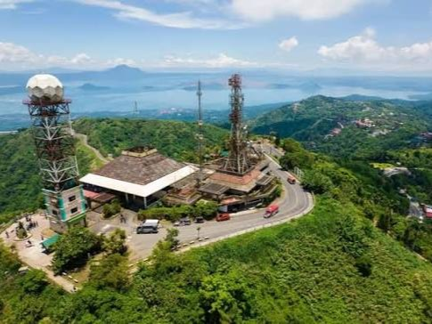

Imus Plaza
Imus, Cavite • City Landmark
A chill spot for a quick stroll, a little people-watching, and soaking in the local vibe of Imus.
Got a place to go? Let’s find your next CavitEscape!
Call me Mhargs! I’m here to sniff out the good spots, hidden gems, and places in Cavite worth the detour.

Imus, Cavite • City Landmark
A chill spot for a quick stroll, a little people-watching, and soaking in the local vibe of Imus.
Kawit, Cavite • Historical Landmark
A must-visit for history lovers and anyone who wants to see where a major chapter of Philippine history unfolded.
Tagaytay, Cavite • Scenic Spot
When you need a break from the usual, head uphill for cool air, mountain views, and a little escape above the city.
